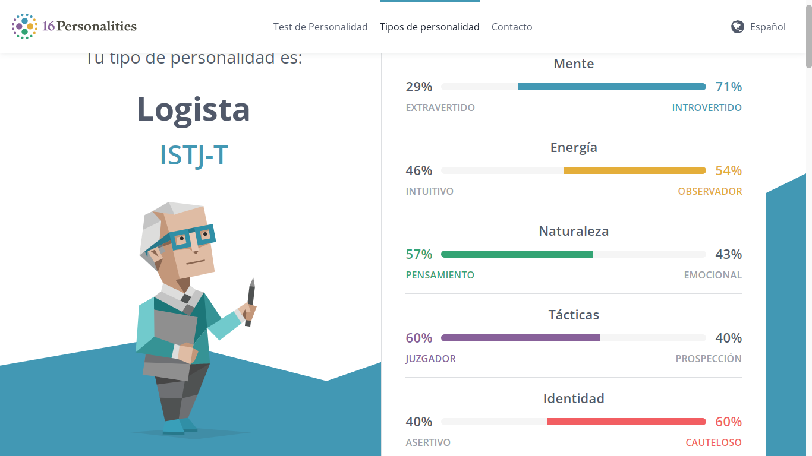
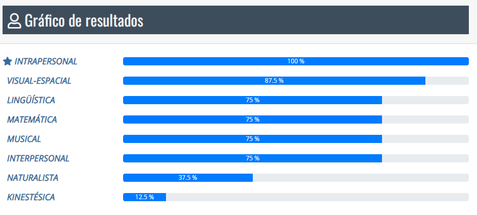

Soy una persona india mulata con el pelo medio largo, el color de mi pelo es castaño con ojos café oscuro Mi peso es de 116 libras y mi estatura es 5,5
Soy Darianny Castillo Pichardo, hija de Pedro Pablo Castillo Martinez y Mercedes Brunilda Pichardo Cruz tengo dos hermanos los cuales son Denesi castillo Pichardo y Duvan ernesto Castillo Pichardo tiene 22 y 25 años Nací el 11 de julio del 2005 en Santiago de los caballeros, actualmente vivo en el Barrio san miguel Ingenio abajo Santiago Estoy en la etapa final del curso de sexto grado de secundaria en el Politecnico Simón Antonio Luciano Castillo.
Bueno tengo muchas cosas las cuales me hacen unica una de ellas son mi autenticidad, mi empeño la forma en que demuestro cariño de una forma muy peculiar, casi no soy de demostrar cariño, tambien me identifico como una persona que se enfoca mucho en las cosas hasta lograr su objetivo.
